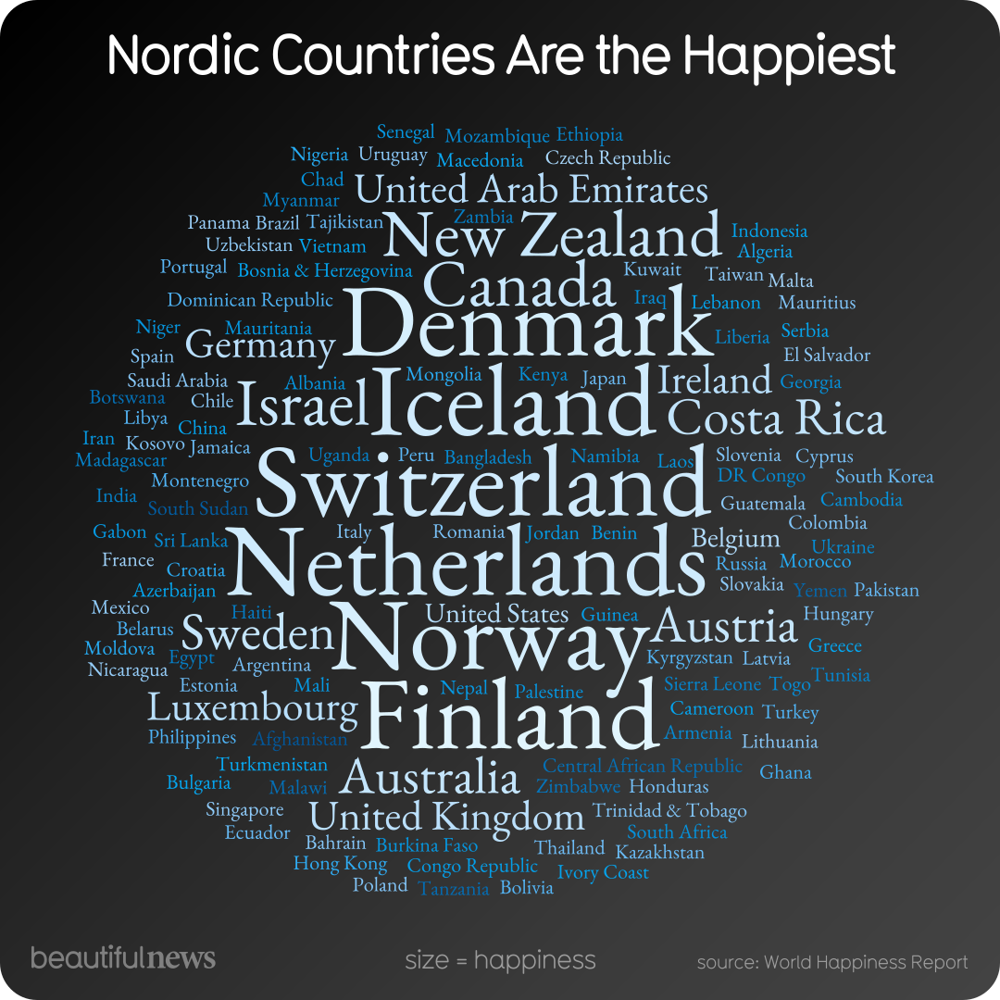

Lab Synopsis
The Visualization

Source: Information is Beautiful - Beautiful News
Critique
Information Resolution
Edward Tufte's concept of information "resolution" refers to how fully and accurately a visualization communicates the depth, context, and complexity of the data it represents. High-resolution graphics allow viewers to understand not only what is being shown, but why it matters and how conclusions are supported. The Beautiful News visualization about Nordic happiness shows clear weaknesses in information resolution, presenting a strong claim without the supporting evidence needed for meaningful understanding.
The visualization asserts that Finland, Denmark, Iceland, Norway, and Sweden are the world's happiest countries. While this claim aligns with the World Happiness Report's findings, the graphic itself provides no numerical data to support it. The World Happiness Report ranks countries using composite happiness scores derived from six variables: GDP per capita, social support, healthy life expectancy, freedom to make life choices, generosity, and perceptions of corruption. In the 2024 report, Finland scores 7.741, Denmark 7.583, Iceland 7.525, Sweden 7.344, and Norway 7.302 on a 0-10 scale. None of these scores, or even references to these variables, appear in the visualization.
More critically, the visualization does not explain why these countries consistently rank so highly. Research from the World Happiness Report highlights several contributing factors, including strong welfare systems, universal healthcare, affordable education, high levels of social trust, low income inequality, and stable democratic institutions. By excluding this context, the visualization reduces a complex sociological phenomenon into a simple geographic claim.
This leads to a broader issue of effects without causes. The graphic presents the outcome of happiness rankings but does not explain the systems or choices that produce those outcomes. Without a causal explanation, the visualization risks oversimplifying the issue.
The graphic also omits important nuances found in the source material. Nordic countries rank highly in overall life satisfaction, but they do not consistently lead in measures of positive daily emotions. Countries in Latin America often score higher on emotional well-being. Happiness also varies by age group within Nordic countries - for example, Sweden ranks much lower among young people than it does overall.
Overall, while the Beautiful News graphic is visually appealing, it prioritizes aesthetic impact over informational depth. From a Tuftean perspective, it functions more as a headline than as a true data visualization.
Concern 1: Cherry-Picking
The visualization engages in cherry-picking by highlighting only the top five Nordic countries without providing any broader comparative context. While these countries do consistently rank near the top of the World Happiness Report, the graphic omits the rest of the rankings, limiting viewers' ability to understand how exceptional these results actually are.
This selective framing implies that happiness is a uniquely Nordic phenomenon, even though other countries also score highly. Recent reports show that nations such as the Netherlands, Israel, and Costa Rica rank close behind or within the top ten. By excluding these comparisons, the visualization reinforces a narrow narrative.
Additionally, the graphic focuses only on overall life satisfaction while ignoring other happiness-related measures, such as daily emotional experience, where many Latin American countries outperform Nordic nations.
Concern 2: Overreaching
The visualization overreaches by presenting Nordic happiness as a simple and universal fact rather than a complex outcome shaped by multiple variables. The declarative framing suggests stability and uniformity, despite significant differences between countries and demographic groups within the Nordic region.
For example, Sweden ranks highly overall but falls much lower when measuring happiness among younger people, showing that national averages mask important internal variation.
More importantly, the graphic risks implying causation where only correlation exists. By failing to explain the policy and institutional factors that researchers associate with high life satisfaction, viewers may incorrectly attribute happiness to geography or culture. This overreach simplifies complex research findings.
Conclusion
This Beautiful News visualization exemplifies the tension between aesthetic appeal and analytical rigor. While it effectively communicates a compelling narrative, it sacrifices depth and nuance in favor of visual impact.
The graphic succeeds as mood-setting content but fails as information design. No metrics are shown, no explanatory factors are identified, and the source is cited without a link or year. By reducing the wealth of data from the survey to a simple geographic claim, the visualization limits viewers' ability to understand the underlying causes of happiness.
For a topic as complex as national well-being - which intersects with economics, sociology, psychology, and public policy - a more responsible visualization would include quantitative data, explanations of key variables, and acknowledgment of limitations.
What I Learned & Skills Demonstrated
Lab 3 taught me to look at data visualizations with a critical eye instead of accepting them at face value. Before this assignment, I would have seen the "Happiest Countries" graphic and thought it was informative and well-made. After applying Tufte's framework, I realized how much information was missing and how the design choices influenced my interpretation.
This lab also strengthened my analytical writing. Structuring the critique around specific Tuftean concepts (information resolution, cherry-picking, overreaching) gave me a vocabulary for discussing data quality that I can apply far beyond this course - especially in Criminal Justice, where data visualizations about crime rates and policing statistics are often used to shape public opinion.
This lab demonstrated my ability to apply established analytical frameworks to evaluate real-world data visualizations, identify hidden biases in design choices, and communicate my findings through clear, structured writing.